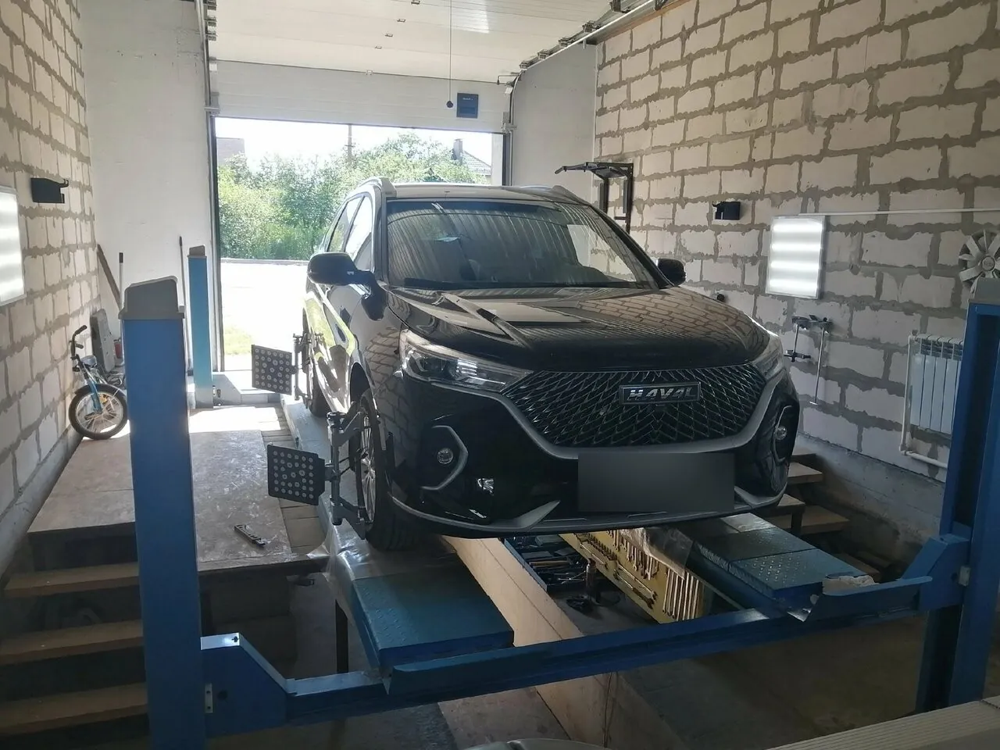
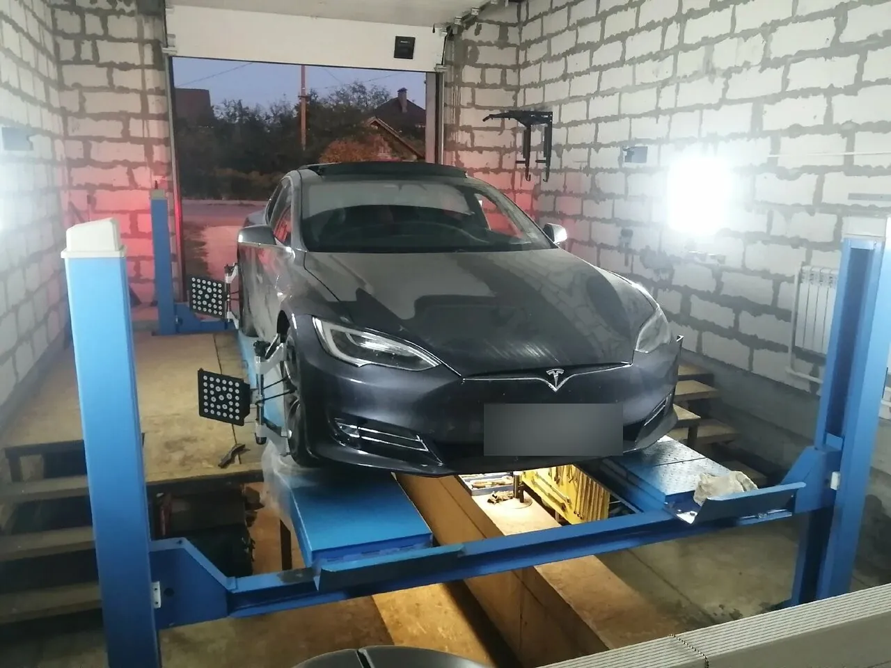
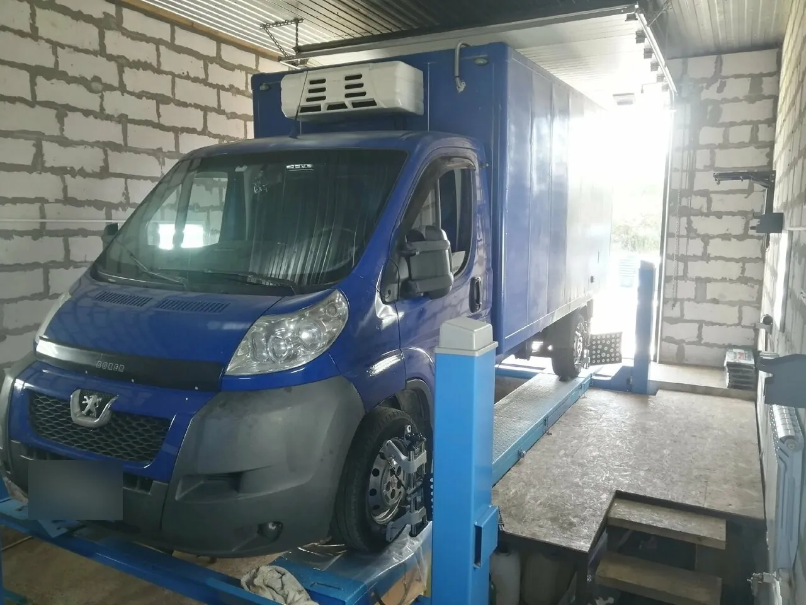
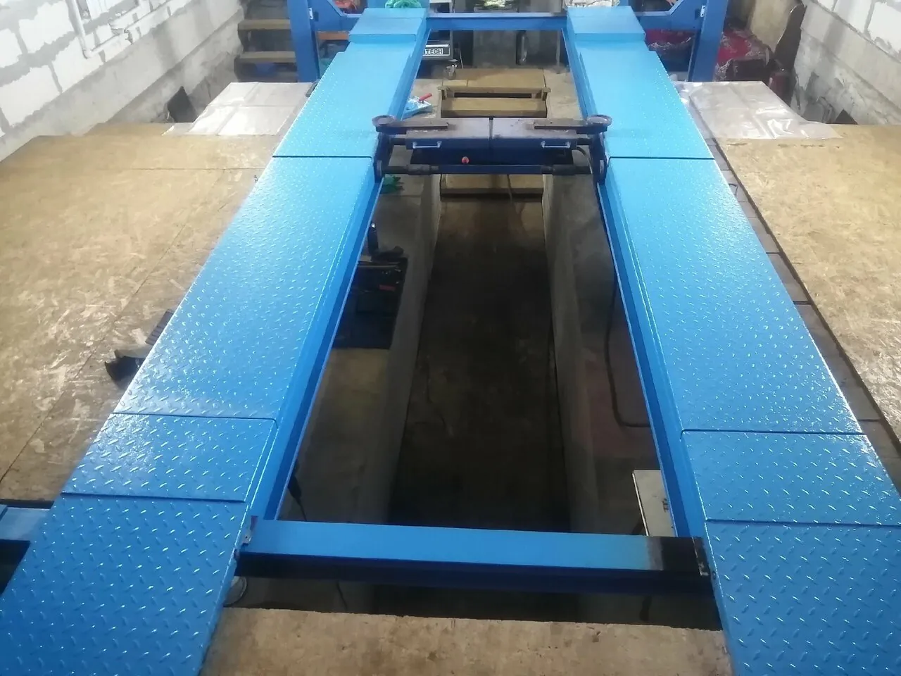
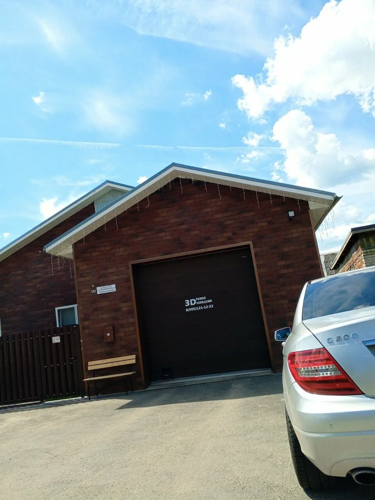

10–20минут
Столько, по словам клиентов, занимает регулировка: «Сделал развал минут за 10 наверное.», «20 минут и всё готово...»
Коломна, Городищенская, 122 · каждый день 9–18
Здесь занимаются одним делом – развалом-схождением на 3D-стенде. Договариваетесь о времени, ждёте в чистом боксе и уезжаете на машине, которая снова держит прямую.
«Шикарно выставил схождение, едет как по рельсам, спасибо!»Константин С.
Колёса разведены – лучи сходятся
Сбитый развал не ломает машину сразу – он съедает резину и нервы на каждой поездке.
«решил мою проблему увода авто в право. Машина поехала ровно»Алексей, Haval F7
«Делаю там развал схождение уже три года (4 раза), все отлично, руль ровно, резину не ест.»Сергей Глубоковский
«До этого, обращались в другие сервисы. Первый , кто выставил все как надо.»Игорь Логинов
После замены рычагов, тяг, наконечников и после сильного удара колесом углы стоит проверить заново.

10–20минут
Столько, по словам клиентов, занимает регулировка: «Сделал развал минут за 10 наверное.», «20 минут и всё готово...»
«В сервисе идеальный порядок и чистота, ключик к ключику.»Катерина Васюнина
«всё по факту говорит, если подвеска убитая, то говорит как есть»Ваше величество

«Мне кажется это лучший развал схождения в городе, по крайней мере, только тут мне устранили проблему.»Павел Муратов


Цена зависит от машины – уточните её при записи по телефону.
Гарантия: {{условия гарантии}}
5,0134 оценки и 81 отзыв на Яндекс Картах
Шикарно выставил схождение, едет как по рельсам, спасибо!
В одном сто отказались делать сход развал ниве шеви. В другом сто сказали ждать очередь неделю. Вспомнил что видел хорошие отзывы в автомобильной группе ВК. Нашёл там тел. Андрея, позвонил, и через час уже был у него. Посидел подождал 20 мин, и всё готово. По работе видно очень хорошего специалиста. Думаю это самое лучшее и самое удобное место для сход развала в Коломне.
Делала у Андрея развал пару раз по рекомендации. Хороший, чистый бокс, оборудование классное. Сделал развал минут за 10 наверное. Дал несколько советов. Машинка рулит как надо! Спасибо. Буду ездить еще 🤝👍👍👍
Делал у Андрея сход развал на хавал ф7 1 поколения, решил мою проблему увода авто в право. Машина поехала ровно Рекомендую
Хороший , профильный сервис. Мастер своего дела. Без лишней воды все покажет и расскажет. Цены, приятные. Можно смело рекомендовать друзьям и знакомым. Делали развал на китайце. Стал адекватно ехать. Есть с чем сравнивать. До этого, обращались в другие сервисы. Первый , кто выставил все как надо. Спасибо !
Делаю там развал схождение уже три года (4 раза), все отлично, руль ровно, резину не ест. Спасибо
Всё на высшем уровне. Очень приветливый и внимательный специалист. Всё сделал хорошо, уже не первый раз обращаюсь. В сервисе идеальный порядок и чистота, ключик к ключику. Рада что есть такие люди позвонила, сразу договорились и приехала.
Отличный мастер, всё по факту говорит, если подвеска убитая, то говорит как есть, рекомендую. Две оси сделал за 3000 ка
Мне кажется это лучший развал схождения в городе, по крайней мере, только тут мне устранили проблему. Спасибо еще раз, рекомендую.
Приехали из другого города и не пожалели. Быстро, профессионально, без лишних вопросов. Спасибо Андрею!!
+1 постоянный клиент Очень доволен Все быстро,четко,чисто! Спасибо большое ! Машина рулится и едет как надо!
Всё отлично! Позвонил , приехал, 20 минут и всё готово... Качественно и аккуратно. Рекомендую.

Открыть на Яндекс КартахМаршрут до бокса